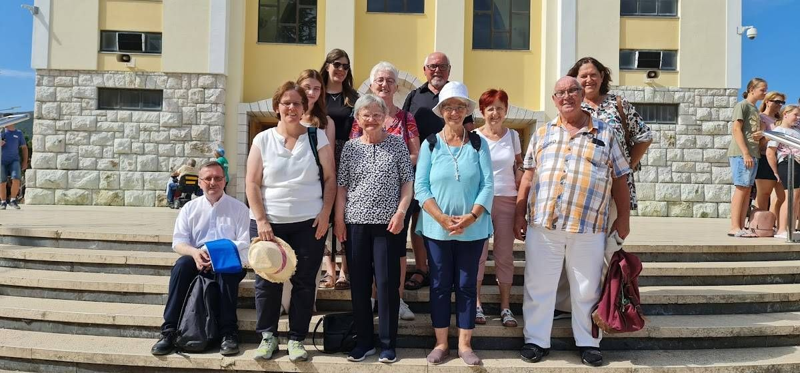

Pilgerreise 8.–15. Mai 2027
Medjugorje – „Neue Wege auf alten Pfaden“
Eine Woche in Medjugorje, in einer kleinen Gruppe von höchstens 15 Pilgern und persönlich begleitet. Die Reise richtet sich besonders an alle, die Medjugorje noch nicht kennen: an Suchende, an Menschen mit Fragen an das Leben und an alle, die Gott besser kennenlernen oder wiederfinden möchten. Aber auch wer schon dort war, ist herzlich willkommen.
Fragen? Rufen Sie mich an: 0152 33 88 99 60

Im Reisepreis enthalten
- Hin- und Rückflug Stuttgart – Mostar mit Eurowings, inklusive Koffer bis 23 kg und Handgepäck
- Bustransfer Flughafen Mostar – Medjugorje und zurück
- 7 Übernachtungen in der Villa Niko bei Familie Čilić, mit Halbpension
- Zimmer mit Dusche, WC, Balkon und Klimaanlage, kostenloses WLAN
- Gemeinsames Programm: Erscheinungsberg, Kreuzweg auf den Kreuzberg, Besuch der Gemeinschaft Cenacolo
- Ausflug in die Altstadt von Mostar
- Persönliche Begleitung durch Reiner Wettcke, der Medjugorje seit 1985 kennt
Die Reise wird privat und nicht kommerziell organisiert. Bleibt am Ende Geld übrig, geht es an die Antoniushilfe e.V., die Waisenkinder in Lahore (Pakistan) unterstützt.
Programm
Unsere Woche in Medjugorje
Jeder Tag beginnt um 07:30 Uhr mit dem gemeinsamen Frühstück und um 08:15 Uhr mit einem kurzen Morgenlob. Um 17:00 Uhr beten wir in St. Jakob den Rosenkranz, um 18:00 Uhr folgt die Heilige Messe. Gegen 20:00 Uhr endet das Tagesprogramm, danach ist Zeit für ein gemütliches Beisammensein.
- Samstag, 8. Mai
Anreise
- 06:55 Abflug in Stuttgart, 08:35 Landung in Mostar
- Transfer nach Medjugorje und Ankunft in der Villa Niko bei Familie Čilić
- Ankommen, Zimmer beziehen, erster Gang zur Kirche St. Jakob
- 17:00 Rosenkranz und 18:00 Heilige Messe in St. Jakob
- Sonntag, 9. Mai
Ankommen im Gebet
- 09:00 Heilige Messe auf Deutsch in St. Jakob
- 10:30 Kennenlernrunde in der Pension
- Nachmittag zur freien Verfügung
- Abendprogramm mit Rosenkranz, Heiliger Messe und Segnung der religiösen Gegenstände
- Montag, 10. Mai
Erscheinungsberg
- 09:00 Heilige Messe auf Deutsch
- 10:00 Unter Gebet und Betrachtung gehen wir auf den Erscheinungsberg Podbrdo, zur Stätte der ersten Erscheinungen
- Nachmittag: Ruhe, Gebet, Gelegenheit zur Beichte
- Abendprogramm mit Gebet für seelische und körperliche Gesundheit
- Dienstag, 11. Mai
Begegnung
- 09:00 Heilige Messe auf Deutsch
- 10:00 Treffen mit Vikica Dodig, Übersetzerin, langjährige Mitarbeiterin von Pater Slavko Barbarić und Cousine der Seherin Vicka
- Nachmittag: Ruhe, Gebet, Gelegenheit zur Beichte
- Abendprogramm mit Eucharistischer Anbetung
- Mittwoch, 12. Mai
Ausflug nach Mostar
- 09:00 Heilige Messe auf Deutsch
- 10:00 Ausflug in die Altstadt von Mostar mit der berühmten Alten Brücke, Mittagessen in Mostar
- Abendprogramm in St. Jakob
- Donnerstag, 13. Mai
Kreuzberg
- 09:00 Gemeinsamer Kreuzweg auf den Kreuzberg Križevac
- Nachmittag: Ruhe, Gebet, Gelegenheit zur Beichte
- Abendprogramm mit Eucharistischer Anbetung
- Freitag, 14. Mai
Cenacolo
- 09:00 Heilige Messe auf Deutsch
- 10:00 Besuch der Gemeinschaft Cenacolo, in der junge Menschen aus Sucht und Krise einen neuen Weg finden
- Nachmittag zur freien Verfügung
- Abendprogramm mit Kreuzverehrung
- Samstag, 15. Mai
Heimreise
- Frühstück und Transfer zum Flughafen Mostar
- 09:15 Abflug, 10:55 Landung in Stuttgart
Einzelne Programmpunkte können sich ändern, da die Abläufe vor Ort mit den Verantwortlichen abgestimmt werden.